Fitting of spatio-temporal Gabor and Disc datasets
Fitting error
Model comparison statistics
We use AIC and F-test to test whether the difference in fitting error is statistically significant at alpha=0.05 level. Both statistical metrics take the number of optimized parameters into account.
F-test: For F-test, we compare the fitting results from caslteCSF with those of other models. The F-static is calculated using the residual sum of squares and degrees of freedom (number of data points - number of optimized parameters) from both models. The corresponding p-value indicates whether or not the null hypothesis is rejected, where H0: the castleCSF does not provide significant better fit than the other model. The p-values less than 0.05 indicates that castleCSF provides a better fit to the data at the significance level of 0.05 (marked with ✓). We performed the F-test for all individual datasets as well as for all datasets combined. For smaller datasets, where the number of data points are comparable to the number of model parameters, F-test can not provide any results since it indicates there is more variance within the models' fits than between.
AIC: Akaike information criterion is a statistical estimator of prediction error and relative quality of the models, which accounts for the number of parameters of each model.
The model with the lower AIC score is considered to be better and with a good balance of error value and the number of parameters.
The sensitivity adjustment column contains a multiplier that is used to adjust the sensitivity of each datasets. It corresponds to sd in the paper (Eq. 18).
Model parameters
castleCSF-jov
M_lms2acc =
1.0000 1.0000 0
1.0000 -1.9782 0
-1.0000 -1.0000 63.3283
p.rg.sigma_sust = 7.498;
p.rg.beta_sust = 0.651336;
p.rg.ch_sust.S_max = [ 722.258 52.9567 0.221899 ];
p.rg.ch_sust.f_max = 0.00790949;
p.rg.ch_sust.bw = 2.06466;
p.rg.A_0 = 7752.35;
p.rg.f_0 = 0.452586;
p.rg.ecc_drop = 0.0591431;
p.rg.ecc_drop_nasal = 2.89648e-05;
p.rg.ecc_drop_f = 2.04986e-69;
p.rg.ecc_drop_f_nasal = 0.180118;
p.yv.sigma_sust = 7.90372;
p.yv.beta_sust = 0.978987;
p.yv.ch_sust.S_max = [ 78.7211 62.3765 0.393932 ];
p.yv.ch_sust.f_max = 0.00300745;
p.yv.ch_sust.bw = 1.33063;
p.yv.A_0 = 2.85502e+07;
p.yv.f_0 = 0.000647336;
p.yv.ecc_drop = 0.00357397;
p.yv.ecc_drop_nasal = 5.85804e-141;
p.yv.ecc_drop_f = 0.0080878;
p.yv.ecc_drop_f_nasal = 0.0147658;
p.ach.ach_sust.S_max = [ 63.5758 2.68268 0.173013 5.19945e-07 1.49333e+10 ];
p.ach.ach_sust.f_max = [ 1.57625 21.0803 0.314855 ];
p.ach.ach_sust.bw = 0.000212628;
p.ach.ach_sust.a = 0.293817;
p.ach.ach_sust.A_0 = 217.724;
p.ach.ach_sust.f_0 = 0.537238;
p.ach.ach_trans.S_max = [ 0.212944 2882.13 ];
p.ach.ach_trans.f_max = 0.000344537;
p.ach.ach_trans.bw = 2.68796;
p.ach.ach_trans.a = 0.000241177;
p.ach.ach_trans.A_0 = 3.6131;
p.ach.ach_trans.f_0 = 2.36188;
p.ach.sigma_trans = 0.0702541;
p.ach.sigma_sust = 10.5502;
p.ach.omega_trans_sl = 2.53665;
p.ach.omega_trans_c = 4.83064;
p.ach.ecc_drop = 0.0259781;
p.ach.ecc_drop_nasal = 0.0452708;
p.ach.ecc_drop_f = 0.0217926;
p.ach.ecc_drop_f_nasal = 0.0068348;
p.colmat = [ 1.9782 0 0 63.3283 ];
Parameters for Ach component:
p.ach_sust.S_max = [ 63.5758 2.68268 0.173013 5.19945e-07 1.49333e+10 ];
p.ach_sust.f_max = [ 1.57625 21.0803 0.314855 ];
p.ach_sust.bw = 0.000212628;
p.ach_sust.a = 0.293817;
p.ach_trans.S_max = [ 0.212944 2882.13 ];
p.ach_trans.f_max = 0.000344537;
p.ach_trans.bw = 2.68796;
p.ach_trans.a = 0.000241177;
p.ach_trans.A_0 = 3.6131;
p.ach_trans.f_0 = 2.36188;
p.sigma_trans = 0.0702541;
p.sigma_sust = 10.5502;
p.omega_trans_sl = 2.53665;
p.omega_trans_c = 4.83064;
p.ecc_drop = 0.0259781;
p.ecc_drop_nasal = 0.0452708;
p.ecc_drop_f = 0.0217926;
p.ecc_drop_f_nasal = 0.0068348;
Parameters for RG component:
p.ch_sust.S_max = [ 722.258 52.9567 0.221899 ];
p.ch_sust.f_max = 0.00790949;
p.ch_sust.bw = 2.06466;
p.A_0 = 7752.35;
p.f_0 = 0.452586;
p.sigma_sust = 7.498;
p.beta_sust = 0.651336;
p.ecc_drop = 0.0591431;
p.ecc_drop_nasal = 2.89648e-05;
p.ecc_drop_f = 2.04986e-69;
p.ecc_drop_f_nasal = 0.180118;
Parameters for YV component:
p.ch_sust.S_max = [ 78.7211 62.3765 0.393932 ];
p.ch_sust.f_max = 0.00300745;
p.ch_sust.bw = 1.33063;
p.A_0 = 2.85502e+07;
p.f_0 = 0.000647336;
p.sigma_sust = 7.90372;
p.beta_sust = 0.978987;
p.ecc_drop = 0.00357397;
p.ecc_drop_nasal = 5.85804e-141;
p.ecc_drop_f = 0.0080878;
p.ecc_drop_f_nasal = 0.0147658;
original Barten's spatiotemporal veridical CSF
p.k = 6.26787;
p.eta0 = 0.0299592;
p.sigma0 = 0.333544;
p.eg = 3.3;
p.u00 = 4.13896;
p.Phi00 = 3e-08;
p.T = 0.0691826;
p.Xmax0 = 18.8229;
p.Nmax = 6.98992;
p.tau10 = 0.0452198;
p.tau20 = 0.0310414;
p.n1 = 4.64653;
p.n2 = 1.73389;
stelaCSF
p.ach_sust.S_max = [ 43.6379 0.495561 0.29314 7.54866e-07 8.9497e+09 ];
p.ach_sust.f_max = [ 1.61279 57.598 0.256819 ];
p.ach_sust.bw = 0.000219145;
p.ach_sust.a = 0.0983482;
p.ach_trans.S_max = [ 0.424481 212.619 ];
p.ach_trans.f_max = 0.00142629;
p.ach_trans.bw = 2.50325;
p.ach_trans.a = 0.000273289;
p.sigma_trans = 0.143348;
p.sigma_sust = 11.6837;
p.ecc_drop = 0.0296662;
p.ecc_drop_nasal = 0.0113638;
p.ecc_drop_f = 0.0190062;
p.ecc_drop_f_nasal = 0.0193858;
Legend
To keep the plots legible, only up to 3 models are plotted.
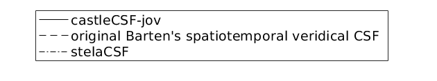
↸Dataset: [modelfest] ModelFest
Achromatic CSF as a function of frequency
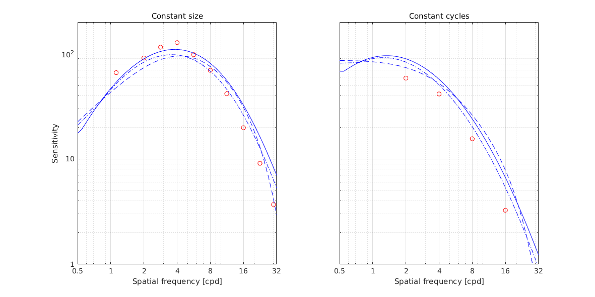
↸Dataset: [hdrvdp_csf] HDR-VDP CSF
Achromatic CSF as a function of frequency
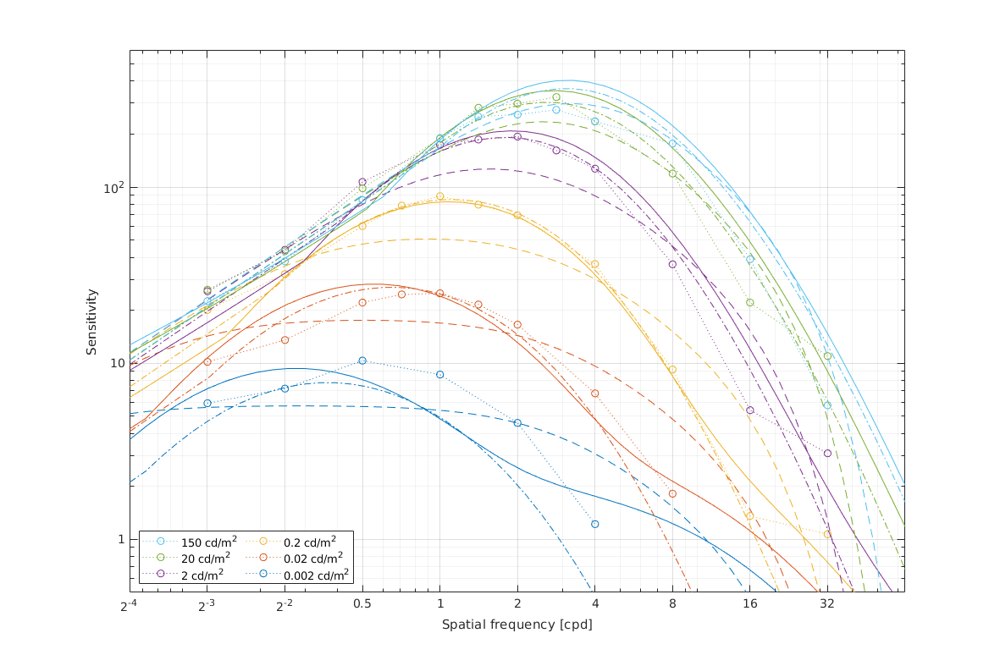
Achromatic CSF as a function of size
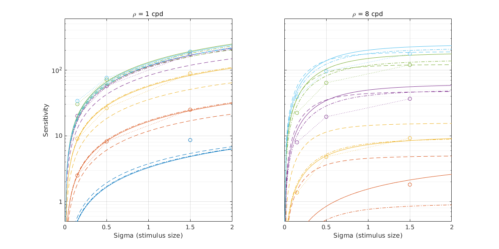
↸Dataset: [rovamo1993] Rovamo et al. 1993
CSF as the funcation of stimulus area
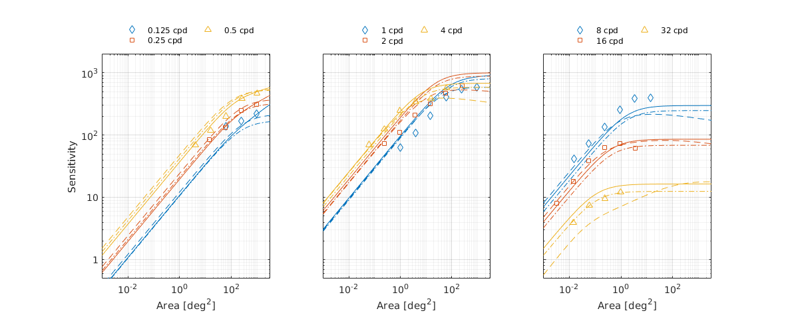
↸Dataset: [laird2006] Laird et al. 2006
Achromatic CSF as a function of temporal frequency for different spatial frequencies
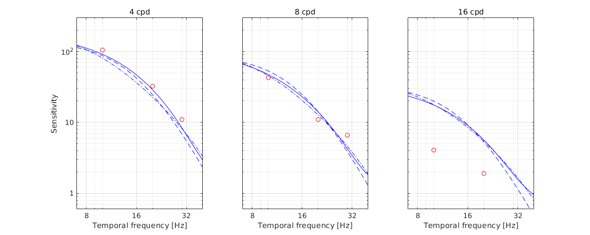
↸Dataset: [snowden1995] Snowden et al. 1995
Temporal contrast sensitivity at different spatial frequencies and luminance levels
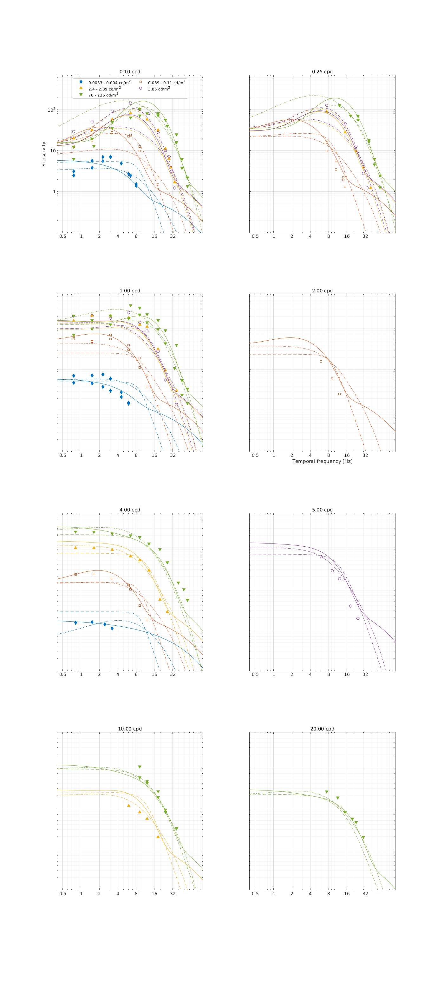
↸Dataset: [robson1966] Robson 1966
Spatial CSF for different temporal frequencies
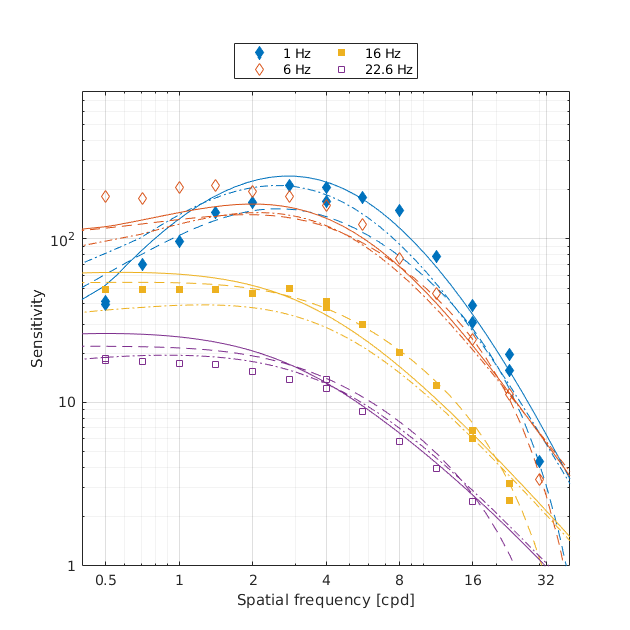
Temporal CSF for different spatial frequencies
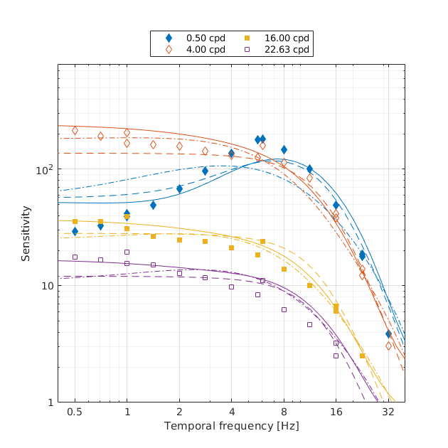
↸Dataset: [virsu1979] Virsu & Rovamo 1979
Contrast sensitivity of central and peripheral vision as a function of spatial frequency and eccentricity
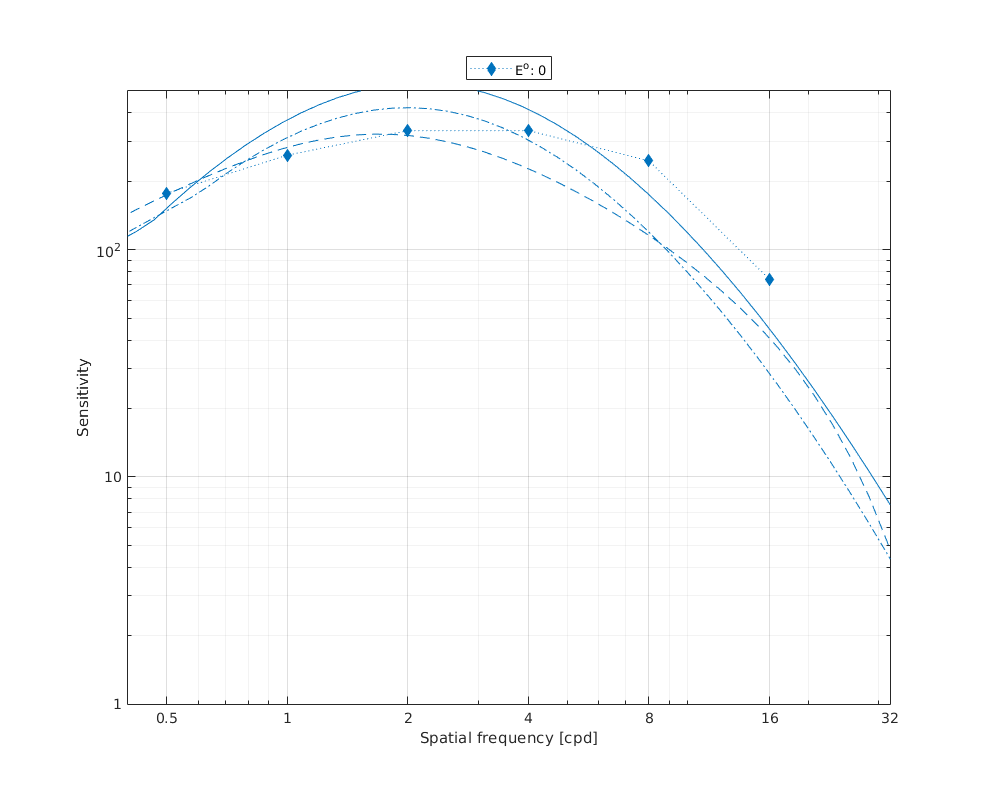
↸Dataset: [virsu1982] Virsu et al. 1982
Contrast sensitivity as the function of frequency
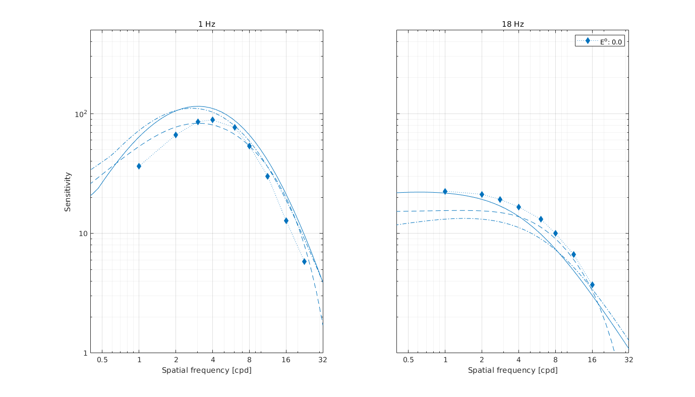
↸Dataset: [wright1983] Wright and Johnson 1983
CSF as function of eccentricity
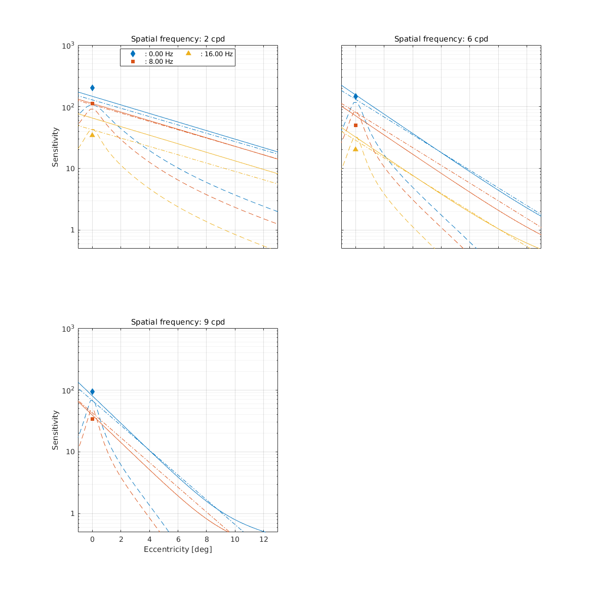
↸Dataset: [colorfest] ColorFest
Chromatic CSF as a function of frequency
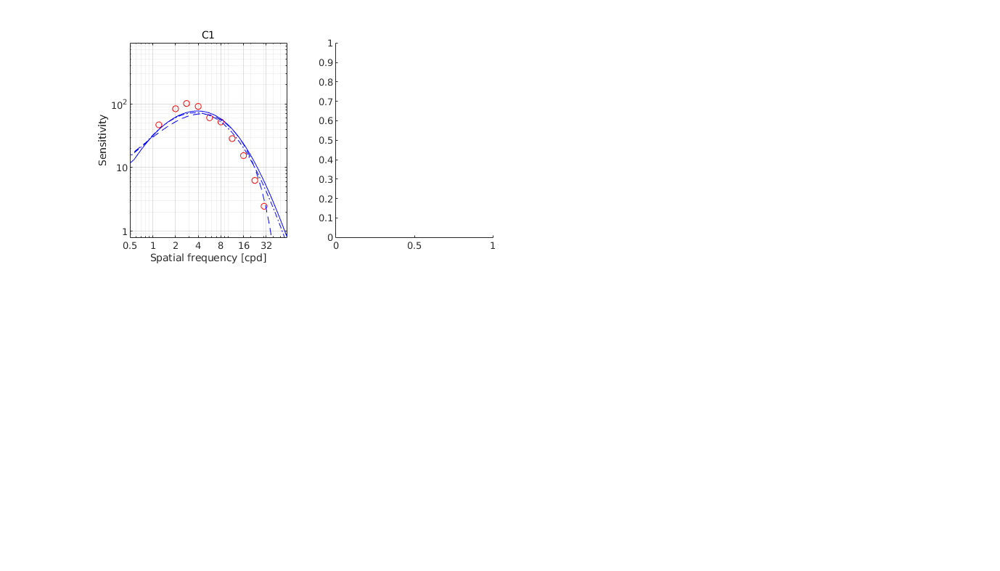
↸Dataset: [hdr_csf] High Dynamic Range CSF
CSF as the function of frequency at different luminance levels (fixed number of cycles)
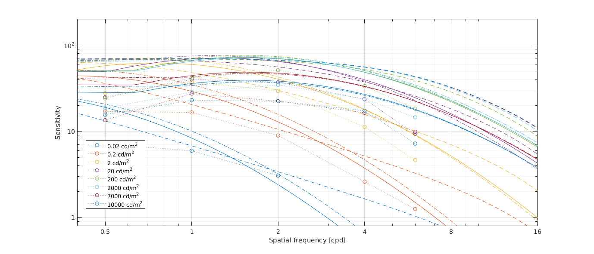
CSF for different number of cycles
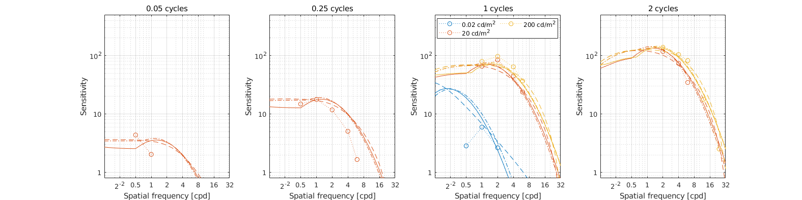
↸Dataset: [hdr_csf_disc] High Dynamic Range Disc CSF
CSF as the function of size at different luminance levels
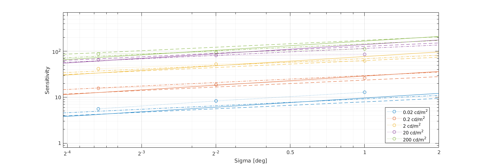